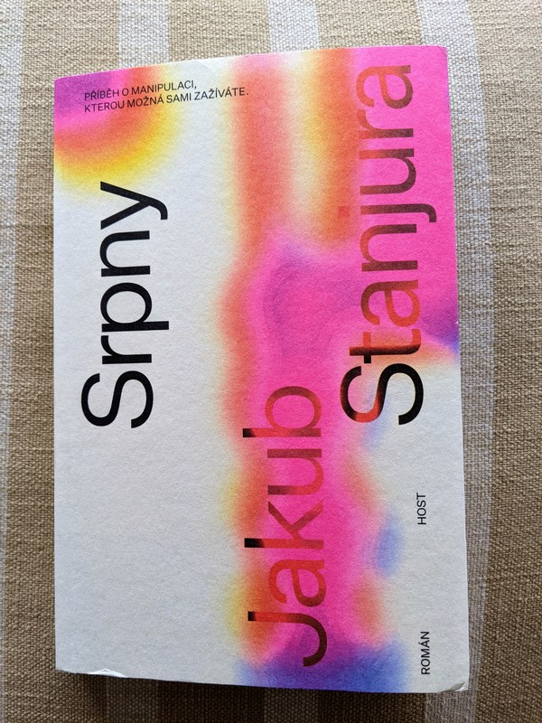

Ufff, tohle teda bylo… Na první pohled docela nenápadná a poměrně útlá kniha, autorova prvotina, a hned takhle silné kafe! Musím říct, že jsem od Srpnů neměla žádná velká očekávání, doporučení na tento titul jsem jen tak letmo zaregistrovala na jednom literárním IG profilu, ale rozhodně kolem něj neběžel nějaký obří hype. A ono je to tak zatraceně dobrý, zatraceně silný a bolavý.
Už jen to téma, které si Jakub Stanjura vybral, je na české poměry poměrně neotřelé. Gaslighting – tedy způsob psychické manipulace, jejíž podstatou je systematické zpochybňování vnímání reality cílové oběti, která si postupem času sama nemůže být jistá, co je realita a co výplod její fantazie, je něco, o čem se ve společnosti podle mě až tolik nemluví, ale přesto se to zcela jistě děje. Stejně jako hlavní hrdince knihy – Daniele, kterou čtenář sleduje po dobu několika za sebou jdoucích srpnů.
Tento koncept mě na knize mimochodem velmi bavil – vracet se k postavám vždy po uplynutí jednoho roku a pozorovat, co se v jejich životě za tu dobu proměnilo. Samozřejmě to přináší i jistá negativa, jako to, že není možné ponořit se s hlavní hrdinkou úplně do hloubky, více se do ní nacítit, ale ve výsledku je to vlastně asi dobře, protože i tak je ta kniha velmi sugestivní a zničující a já sama jsem ji musela před poslední kapitolou odložit, protože už toho na mě bylo prostě najednou příliš.
Co musím opravdu ocenit je to, jak skvěle se autor mužského pohlaví dokázal vcítit do hlavní ženské hrdinky, jak uvěřitelné bylo její jednání. Přesto jsem do poslední chvíle doufala, že se v Daniele na konci něco zlomí – přece jen mi od začátku příběhu přišla jako docela silná osobnost na to, aby se nechala takto semlít a stala se z ní totální o sobě pochybující troska… Na druhou stranu ji sledujeme v období mezi 17 a 24 lety, kdy je člověk ještě celkem tvárný a asi i více ovlivnitelný svým okolím. A vlastně to i celé koresponduje se zrádností gaslightingu – tedy, že obětí takové manipulace se může stát prakticky každý, i ten, který je přesvědčen o tom, že „jemu by se to nikdy nestalo“.
Co víc dodat? Jsem ze Srpnů opravdu příjemně překvapená, ač to bylo těžké literární sousto. Design obálky propojený s příběhem je už jen taková třešnička na dortu. Myslím, že ve mně bude kniha ještě nějakou chvíli doznívat. Že mi ze vzpomínky na ni bude ještě chvíli úzko. Ale nemůžu jinak, než ji doporučit.
